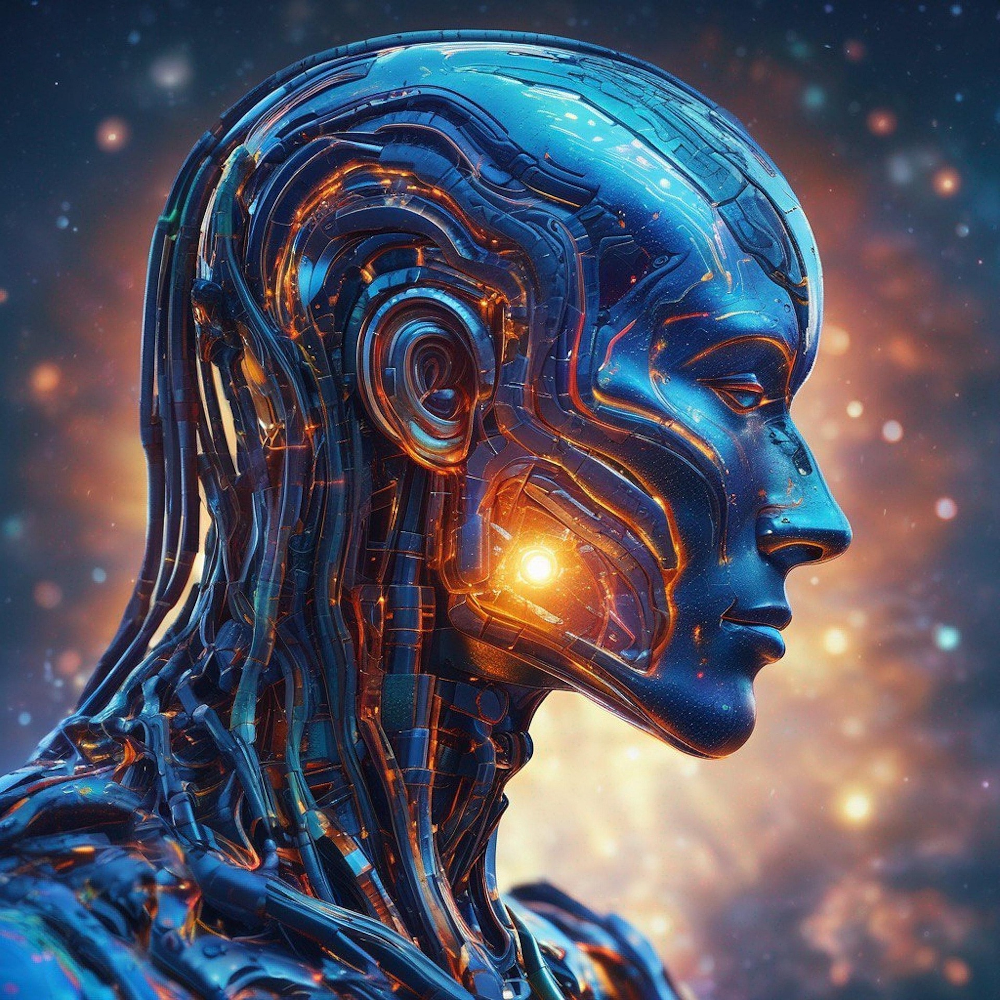
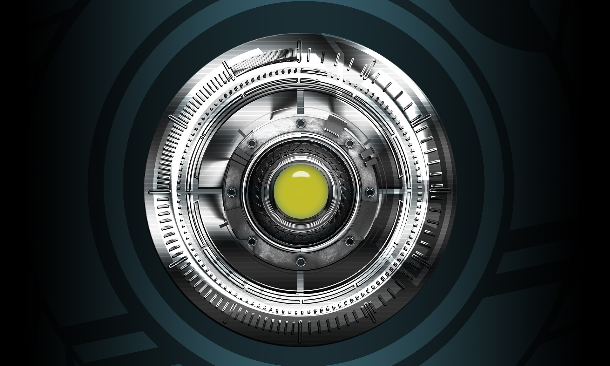
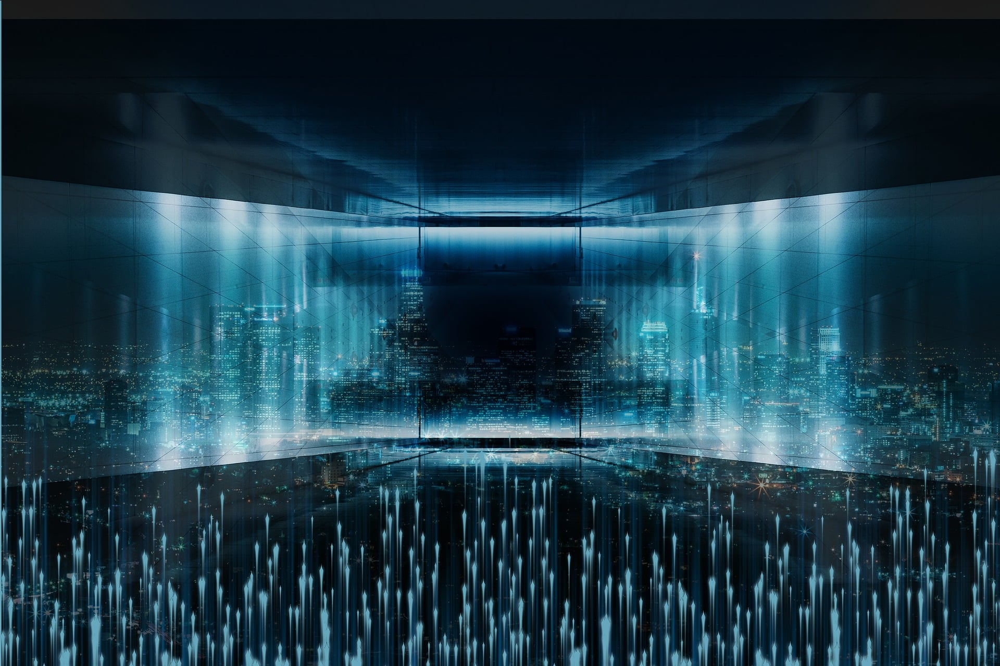
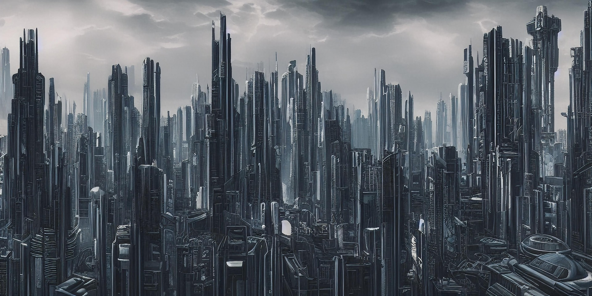
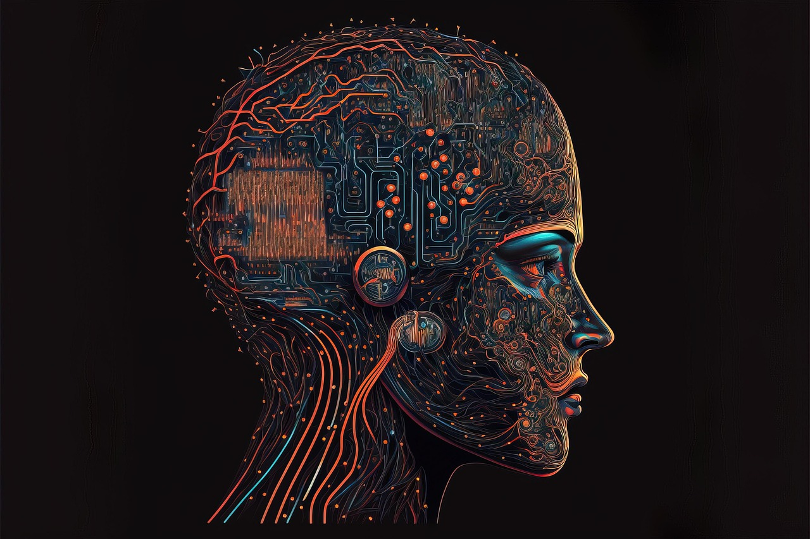
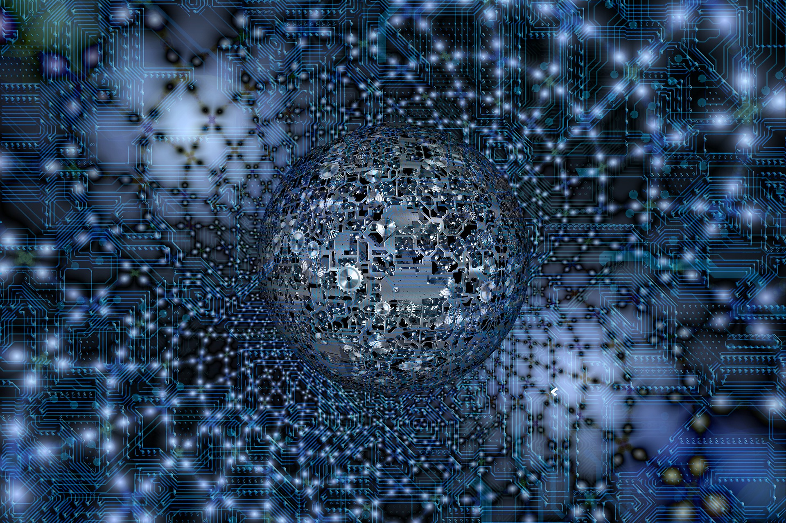
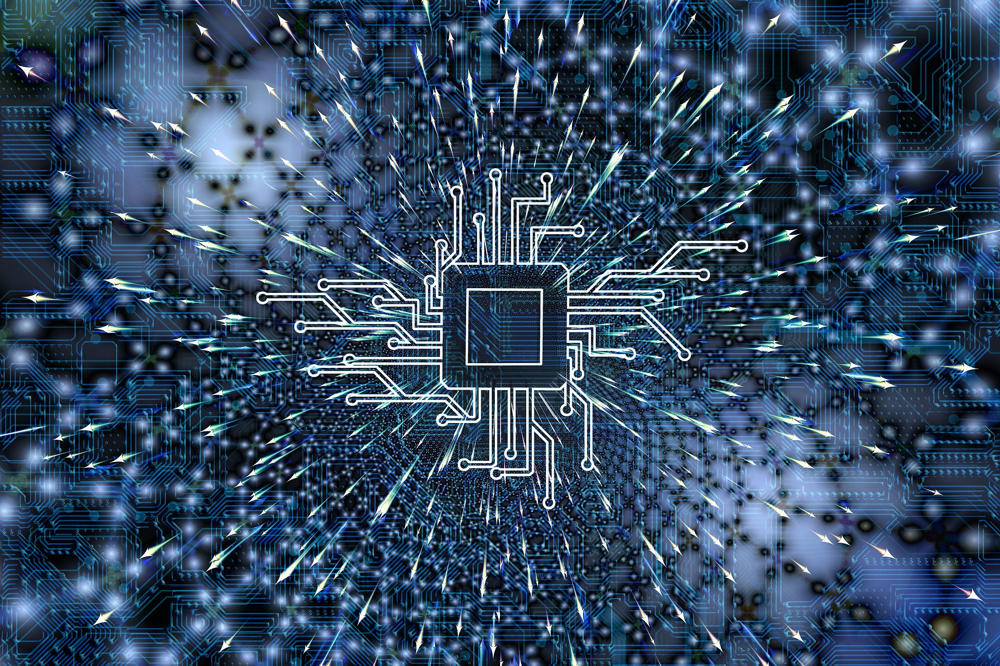
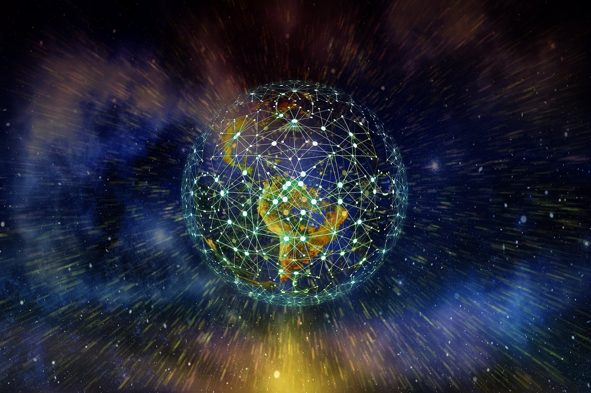
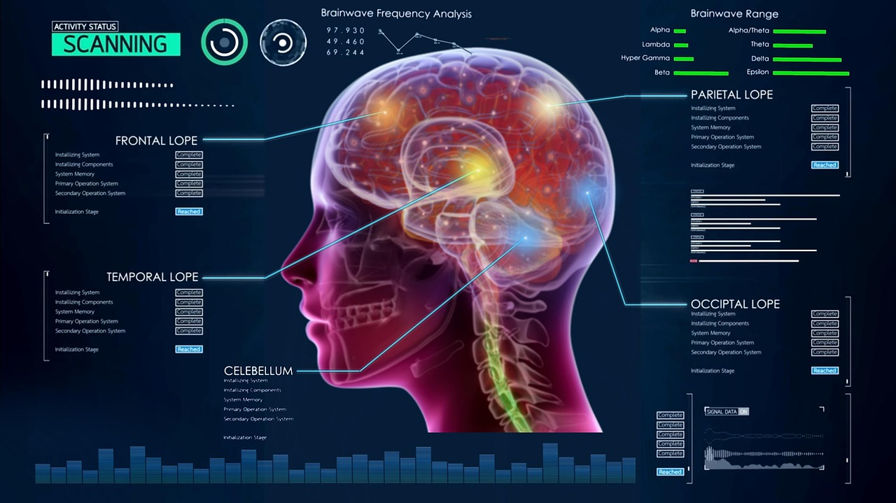

Unidad I: ¿Qué es la tecnología digital?
Tipos de tecnología digital
Introducción a las tecnologías digitales
Introducción a las tecnologías digitales
Las tecnologías digitales suelen asociarse con herramientas como internet o equipos de cómputo, pero en realidad no se limitan únicamente a estos dispositivos.


Tecnologías orientadas al software
Los productos tecnológicos digitales pueden basarse únicamente en software, sin interacción directa con el mundo físico.

Internet de las cosas (IoT)
La Internet de las Cosas hace referencia a dispositivos conectados a internet que pueden controlarse a distancia, como relojes inteligentes, teléfonos o electrodomésticos.

Blockchain
Blockchain es una tecnología que permite almacenar y transferir información de manera segura mediante bloques conectados entre sí.

Inteligencia artificial
La inteligencia artificial busca crear sistemas capaces de aprender, analizar información y responder de manera similar a los seres humanos.


Tecnologías orientadas al hardware
Existen productos tecnológicos físicos que amplían sus funciones gracias al uso de software.
Ciudades inteligentes
Las ciudades inteligentes utilizan recursos tecnológicos para mejorar servicios como energía, conectividad y movilidad.

Tecnología digital a futuro
Productividad
Las herramientas digitales permiten realizar tareas más rápidamente, optimizando procesos empresariales, educativos y personales.
La inteligencia artificial será la norma
Los modelos de inteligencia artificial continuarán evolucionando y serán utilizados cada vez más en distintos sectores.
Impacto de la tecnología digital
Agricultura y tecnología
Las tecnologías digitales ayudan a monitorear cultivos y optimizar la producción agrícola.
Campo educativo
La inteligencia artificial puede apoyar el aprendizaje, la investigación y el análisis de información educativa.


Salud y tecnología
La telemedicina y otras herramientas digitales mejoran la comunicación entre pacientes y profesionales de la salud.
Actividades de aprendizaje
Las tecnologías digitales suelen asociarse con herramientas como internet o equipos de cómputo, pero en realidad no se limitan únicamente a estos dispositivos.
Juego de Verdadero o Falso
Juego interactivo sobre productos tecnológicos digitales.
Juego de adivinanzas sobre tecnologías digitales
Actividad interactiva de adivinanzas relacionada con tecnologías digitales.
Juego de crucigrama sobre tecnologías digitales
Actividad interactiva de crucigrama relacionada con tecnologías digitales.